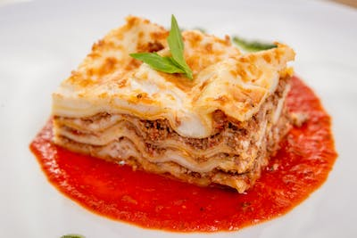

World's Best Lasagna

Lusagna's Stamp
We love this lasagna recipe because it's incredibly customizable,
so you can easily alter the ingredient list to suit your needs.
If you want to stay true to the original recipe, though,
these are the ingredients you'll need to add to your grocery list
Ingredients
- Meat:This super meaty lasagna has sweet Italian
sausage and lean ground beef.
- Onion and Garlic:An onion and two cloves of garlic are
cooked with the meat to add tons of flavor.
- Tomato Products:You'll need a can of crushed tomatoes,
two cans of tomato sauce, and two cans of tomato paste.
- Sugar:Two tablespoons of white sugar add subtle sweetness
and enhance the flavor of the sauce.
- Spices and Seasonings:This lasagna recipe is flavored
with fresh parsley,dried basil leaves, salt, Italian seasoning,
fennel seeds, and black pepper.
- Lasagna noodles:Use store-bought or homemade lasagna noodles
- Cheeses:armesan, mozzarella, and ricotta cheese
make this lasagna extra decadent.
- Egg:An egg helps bind the ricotta so it doesn't ooze
out of the lasagna when you cut into it.
How to make Lasagna Step by Step
- Make the meat sauce.
- Cook the noodles.
- Make the ricotta mixture.
- Layer the lasagna according to the recipe instructions.
- Cover with foil and bake.
- Let the lasagna rest before serving.
How to Layer Lasagna
- Meat Sauce
- Noodles
- Ricotta Mixture
- Mozarrella Slices
- Meat Sauce
- Parmesan Cheese
- Repeat the layers, then top with the remaining Parmesan.
How Long to Cook Lasagna
The assembled lasagna should take about 50 minutes to cook in an oven
preheated to 375 degrees F. Cover it with foil for the first 25 minutes,
then let it cook uncovered for the final 25 minutes. Also, it's important
to let the lasagna rest at room temperature for about 15 minutes before you cut
into it.
How to Reheat Lasagna
You can use the microwave to reheat lasagna if you're in a pinch or short on time,
but be aware that it will change the texture of the noodles. The best way to reheat l
asagna is in the oven. Simply cover the leftovers with foil and bake at 350 degrees F f
or about half an hour, or until it's heated through and the sauce is bubbly.